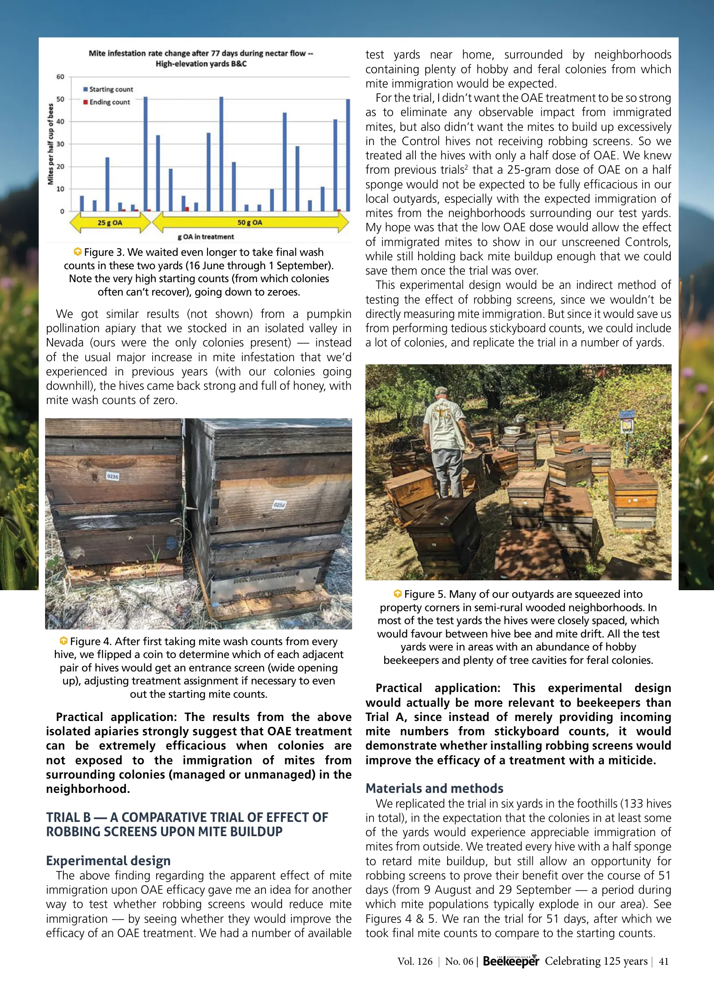

We got similar results (not shown) from a pumpkin
pollination apiary that we stocked in an isolated valley in
Nevada (ours were the only colonies present) –– instead
of the usual major increase in mite infestation that we’d
experienced in previous years (with our colonies going
downhill), the hives came back strong and full of honey, with
mite wash counts of zero.
test yards near home, surrounded by neighborhoods
containing plenty of hobby and feral colonies from which
mite immigration would be expected.
For the trial, I didn’t want the OAE treatment to be so strong
as to eliminate any observable impact from immigrated
mites, but also didn’t want the mites to build up excessively
in the Control hives not receiving robbing screens. So we
treated all the hives with only a half dose of OAE. We knew
from previous trials2 that a 25-gram dose of OAE on a half
sponge would not be expected to be fully efficacious in our
local outyards, especially with the expected immigration of
mites from the neighborhoods surrounding our test yards.
My hope was that the low OAE dose would allow the effect
of immigrated mites to show in our unscreened Controls,
while still holding back mite buildup enough that we could
save them once the trial was over.
This experimental design would be an indirect method of
testing the effect of robbing screens, since we wouldn’t be
directly measuring mite immigration. But since it would save us
from performing tedious stickyboard counts, we could include
a lot of colonies, and replicate the trial in a number of yards.
Figure 4. After first taking mite wash counts from every
hive, we flipped a coin to determine which of each adjacent
pair of hives would get an entrance screen (wide opening
up), adjusting treatment assignment if necessary to even
out the starting mite counts.
Figure 5. Many of our outyards are squeezed into
property corners in semi-rural wooded neighborhoods. In
most of the test yards the hives were closely spaced, which
would favour between hive bee and mite drift. All the test
yards were in areas with an abundance of hobby
beekeepers and plenty of tree cavities for feral colonies.
Figure 3. We waited even longer to take final wash
counts in these two yards (16 June through 1 September).
Note the very high starting counts (from which colonies
often can’t recover), going down to zeroes.
Practical application: The results from the above
isolated apiaries strongly suggest that OAE treatment
can be extremely efficacious when colonies are
not exposed to the immigration of mites from
surrounding colonies (managed or unmanaged) in the
neighborhood.
TRIAL B –– A COMPARATIVE TRIAL OF EFFECT OF
ROBBING SCREENS UPON MITE BUILDUP
Experimental design
The above finding regarding the apparent effect of mite
immigration upon OAE efficacy gave me an idea for another
way to test whether robbing screens would reduce mite
immigration –– by seeing whether they would improve the
efficacy of an OAE treatment. We had a number of available
Practical application: This experimental design
would actually be more relevant to beekeepers than
Trial A, since instead of merely providing incoming
mite numbers from stickyboard counts, it would
demonstrate whether installing robbing screens would
improve the efficacy of a treatment with a miticide.
Materials and methods
We replicated the trial in six yards in the foothills (133 hives
in total), in the expectation that the colonies in at least some
of the yards would experience appreciable immigration of
mites from outside. We treated every hive with a half sponge
to retard mite buildup, but still allow an opportunity for
robbing screens to prove their benefit over the course of 51
days (from 9 August and 29 September –– a period during
which mite populations typically explode in our area). See
Figures 4 & 5. We ran the trial for 51 days, after which we
took final mite counts to compare to the starting counts.
Vol. 126 | No. 06 |
Celebrating 125 years | 41